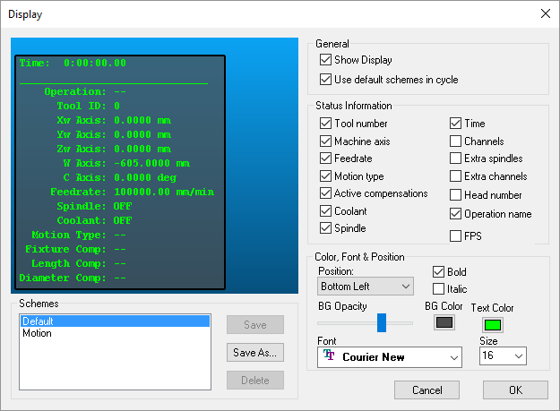

Monitoring Virtual Machine’s Results
Monitoring the simulation is actually the responsibility of GENER and CERUN. GENER monitors the simulation during look-ahead operations (activated by LINTOL/SCAN and the SMARTP command features described earlier starting here) in an attempt to avoid positioning or interpolating the machine into situations where collisions might occur. GENER reports all unavoidable collisions and overtravel conditions in the diagnostic window and post-processor listing file. CERUN monitors the simulation at all times and reports all collisions and overtravel conditions in the diagnostic window and control emulator log file. GENER and CERUN perform these actions regardless of whether the Diagnostic and simulation windows are visible or not.
VM provides the following controls and features to aid visual monitoring of the simulation:
Animation control options (see “Animation Control”) affect the simulation display speed, permitting either continuous viewing of the simulation at some real-time ratio, or snapshots taken at defined intervals.
A “head-up display” or HUD feature (see “Head-Up Display”) superimposes status information on the simulation window. The HUD can be toggled using the
 Display button on the VM
Mode toolbar as well as from the Simulation»Show»Display menu. The
Ctrl D and Ctrl Shift D key combinations can be used to cycle through
various HUD display layouts if defined.
Display button on the VM
Mode toolbar as well as from the Simulation»Show»Display menu. The
Ctrl D and Ctrl Shift D key combinations can be used to cycle through
various HUD display layouts if defined.Tool path display options (see “Tool Path Display”) show a trace of the motions of the tool in the simulation window. The tool path display can be toggled from the VM Tool Path toolbar as well as from the Simulation»Show»Tool Path (Ctrl T) menu.
A Time Line feature in the Simulation»Controller window (see “Controller Time Line”) can be used to review and play back the simulation. VM provides the ability to synchronize both the Time Line display and the simulation windows with the source and trace windows available with the GENER and CERUN UI. This can be used to see the state of the simulation at a particular moment in time.
Part vs. stock comparison functions (see “Part / Stock Comparison”) can be used to compare the expected design part against the actual in-process stock. These functions are available when MRS (material removal simulation) is active and the part definition contains both stock and design components. Both simple excess/gouge and color graduated Boolean difference are available, selectable from the VM View Filter toolbar and Simulation»Compare (Ctrl Alt Q) menu.
Measurement functions (see “Measurement”) can be used to measure the diameter of an object as well as the distance and angles between objects. Measurement mode is toggled using the
 Measurement button on the VM Mode toolbar.as well as from
the Simulation»Mode»Measure menu. A VM Measure toolbar provides
various functions to control measurement results and the picking
process. A VM Cross Section toolbar can be used to section the
in-process stock for easier measurement and viewing.
Measurement button on the VM Mode toolbar.as well as from
the Simulation»Mode»Measure menu. A VM Measure toolbar provides
various functions to control measurement results and the picking
process. A VM Cross Section toolbar can be used to section the
in-process stock for easier measurement and viewing.
Animation Control

Animation options are controlled from the VM Animation toolbar as well as from the Simulation»Options dialog Misc tab.
The animation control options affect the simulation display speed. Selecting the “Continuous” mode will slow the simulation down to a specified factor of real time within the limitations of the CPU and graphics capabilities of your computer. When “Motion Step” is selected, the display is updated at the specified interval in motions, meaning that the simulation display is updated after every n motion steps. A third “Time Interval” method refreshes the display at the specified interval in seconds, which has the least impact in terms of CPU requirements.
When in continuous animation mode, extremely slow motions may give the impression that the software is no longer operating. If unsure, activate the HUD motion display (described below), which will show if axes are in fact moving. The Simulation Options dialog can be activated while the simulation is running (and even mid interpolation), allowing you to change the mode from continuous to another.
Head-Up Display
{kind=link}
The HUD superimposes status information on the simulation window. To change the content or position of the HUD, select the Simulation»Display (Ctrl Alt D) menu to bring up the Display dialog. Status information can be organized into different schemes, which can be labeled by name and saved in the Windows Registry (the Default scheme cannot be changed). You can cycle between different display schemes listed in the simulation window using the Simulation»Show»Next Display and Previous Display (Ctrl D and Ctrl Shift D) menu selections. Uncheck the “Use default schemes in cycle” box to omit the Default scheme when cycling through the different display schemes.
The FPS Status Information item can be selected to measure the simulation window display rate, in the form “FPS a / b” (useful when testing Graphic card setting). The number “a” is the theoretical maximum number of screen updates per second that VM could do if all it had to do was redraw the display. The number “b” is the actual number of updates per second, and takes into account all other processing requirements.
Tool Path Display

The leftmost three buttons on the VM Tool Path toolbar affect the display of tool path tracing in the simulation window. These buttons all have corresponding Simulation»Show menu functions:
{kind=link}
Simulation»Show»Tool Path (Ctrl T) enables and disables tool path tracing in the simulation window. Tracing shows the motion of the tool in relation to the part, taking into account the sweep effects caused by rotary motions and the “hockey stick” effect caused by independent axis positioning. The trace is shown fixed in relation to the part (meaning that the trace moves with the part), and in different colors depending on the type of motion (e.g., red for rapid and green for cutting).

Simulation»Show»Tool Vector enables and disables the display of the tool axis vector at each motion end-point in the tool path trace. This function is only available when the tool path trace is enabled.
{kind=link}
Simulation»Show»Tool Path as Overlay (Ctrl Shift T) controls the visibility of the tool path. When the tool path is shown in “overlay” mode it will not be hidden by objects that might be between you (the viewer) and the tool path


 The rightmost three buttons on the VM Tool Path toolbar affect the
extent of the display of tool path tracing in the simulation window. The
trace can be limited to a specified elapsed time, or it can show the
tool path for a specified number of tools or operations. If no buttons
are selected then the trace is for the entire program.
The rightmost three buttons on the VM Tool Path toolbar affect the
extent of the display of tool path tracing in the simulation window. The
trace can be limited to a specified elapsed time, or it can show the
tool path for a specified number of tools or operations. If no buttons
are selected then the trace is for the entire program.
{kind=link}
The Simulation»Options dialog Tool Path tab provides various tool path display options:
The colors and line styles used to distinguish feed motions, rapid motions, SmartPACK modified motions and a motion that has been “synchronized” with other windows in the user interface.
Whether to show the tool path trace at the SCP (spindle control point) or the tool tip.
The extent of the tool path to display. Tool paths containing many motions might slow down the simulation speed or affect visibility of the underlying part. The tool path display can be reduced to show only those motions within a specified period, or for a specified number of tools or operations.
Controller Time Line
{kind=link}
The VM Virtual Controller includes a Time Line feature that shows the collision and axes overtravel state of the simulation in a time-graph format. The Controller window can be toggled from the View toolbar by selecting the button shown circled in the toolbar above. Select the button a second time to either hide the Controller window or to restore a Controller window that has been minimized. This window can also be controlled by selecting Simulation»Controller from the menu bar. Once the Controller window is visible, select the Time Line tab to view a time graph of the process.
{kind=link}
Pause the simulation to select any point in time with the left-mouse button; the simulation windows will update to show the state of the simulation at that time. You can also drag the mouse pointer left and right to cause the simulation windows to replay the motion events backwards and forwards in time.
See Simulation»Controller: Time Line for more details.
Part / Stock Comparison
{kind=link}
Comparison between the design part and the in-process stock is only available with a MRS (Material Removal Simulation) license available and enabled via the VM pane on the GENER and CERUN launch panels. The MRS license provides the added functionality to compute the effect of the cutting process of the tool on the rough stock. The resultant shape is called the “in-process stock”.
The in-process stock must be visible to perform and see stock vs. design part comparisons. The two leftmost circled buttons toggle the display of Boolean Overcut (gouge) and Boolean Undercut (excess) material. The gouge and excess calculations are done using an exact comparison between in-process stock and its associated part. These associations must first be defined in the Simulation»Parts/Fixtures (Ctrl Alt P) dialog (see Adding Parts, Fixtures and Stock to the Simulation”).

The Boolean excess and overcut results can sometimes be misleading, since it can be difficult to judge the thickness of the excess or gouge material. VM provides a Simulation»Compare (Ctrl Alt Q) color graduated part/stock comparison feature to address this issue. The comparison colorization settings are applied only to gouge and excess material, which must first be enabled by selecting one or both of the Boolean Overcut and Boolean Undercut filters. Select the Colorized Boolean filter (second from right in the circled buttons above) to compute and view the results.
The comparison is done by sampling the surface of the gouge and/or excess material, and computing the shortest distance to the part. The distance is then used to assign a fixed or graduated color, as defined using the various options of the Compare dialog. If the sample size is small, or the part very large, the colorization process may take a long time to compute. The comparison can be cancelled at any time, in which case the displayed results will be incomplete (but perhaps still useful).
When viewing the gouge material in combination with either the part or the in-process stock, it helps to select the part with the mouse so that its surface becomes transparent, allowing the gouged material surface to be seen.
The Simulation»Chip and Split (Ctrl Alt C) feature can be used to remove uncut in-process stock fragments from the simulation before performing a comparison.
Measurement
{kind=link}
Virtual Machine provides various functions to measure objects. Measurement mode is toggled from the VM Mode toolbar by selecting the button shown circled at left. Measurement mode can also be selected from the Simulation»Mode»Measurement menu.
Once in measurement mode the cursor appears as an arrow with calipers and measurement results are shown in the simulation window in the form of a small HUD (heads-up display).
Pressing the left-mouse button either starts or completes a measurement function using the selected object under the mouse pointer. Press the ESC key to undo selections. Press and hold the Ctrl key to manipulate the camera with the mouse while taking measurements.
{kind=link}
Within VM, objects are constructed of triangles. The VM Measure toolbar (available when in measurement mode) provides various buttons to define the type of measurement, the types of objects being measured, and chained vs. fanned measuring options.
The leftmost button selects distance and angle measurements. The button to its immediate right selects diameter measurements. The middle series of three toggle buttons are filters that define the parts of the triangles that can be selected with the mouse. The toggle to the right of the filter buttons switches between chained (one to the next) and fanned (one to many) measurements. The rightmost toggle affects the visibility of the objects being measured; when in “overlay” mode they will not be hidden by other objects that might be between you (the viewer) and the measured objects.

When measuring in-process stock, the VM Cross Section toolbar can be used to section the stock to provide access to hidden areas or to measure within a section plane. Sectioning can also be controlled from the Simulation»Show»Cross Section menu.
The four leftmost buttons define where the section plane will occur,
either along a standard datum with respect to the stock mount point, or
along a custom plane chosen using the same functionality as for
measurements described above. The sectioning function hides in-process
stock on one side of the section plane; the  Invert Plane
button switches the side that is hidden. The
Invert Plane
button switches the side that is hidden. The  Show Grid button
toggles a grid display on the section plane. The two rightmost buttons
and the numeric input field can be used to offset the section plane from
the one initially selected.
Show Grid button
toggles a grid display on the section plane. The two rightmost buttons
and the numeric input field can be used to offset the section plane from
the one initially selected.
Cross sectioning does not affect the in-process stock; it only affects the visibility of the stock. Collisions and material removal functions will continue to operate as normal, even when the stock is sectioned.